プレイヤーを動かそう
🎯 この章でできるようになること
- アセットストアの素材で、キャラクターの見た目を入れかえられる
- WASD キーでも矢印キーでも、騎士を動かせる
- 動いているかどうかで、アニメーションと向きを切りかえられる
- clamp の式で、騎士が画面の外に出ないようにできる
全6回で作るのは「DUNGEON SURVIVOR」というゲームです。
ダンジョンの部屋に、ゴブリンがどんどんおしよせてきます。
騎士は自動でナイフを投げるので、プレイヤーは動いてよけるだけ。
ジェムを集めてレベルアップし、15分後に出てくるボスをたおせばクリアです。
第1回は、その主人公の騎士を動かすところから始めます。
1-1. この章で作るしくみ
1-2. トップダウンのスターターから作ろう
今回は「Top-down」（真上から見下ろす）のスターターから始めます。
歩く・壁にぶつかる、といった基本はもう入っています。
そこに、騎士の見た目や、自動で飛ぶナイフ、敵を足していきます。
https://editor.gdevelop.io を開いて、ログインしていることを確かめます。
ホーム画面の左のメニューで「Create」を選び、右の「＋ Create new game」を押します。
「Continue with Human Intelligence」の列から「Top-down」を選ぼう。
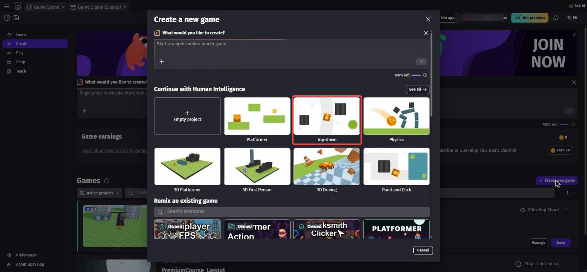
「Project name」の欄に my-dungeon と入力します。
保存先が「GDevelop Cloud」になっていることを確かめて、「Create new game」を押します。
「Maximum of 3 cloud projects reached」と出て作れないときは、第0章「4本目のゲームを作りたくなったら」を見てね。
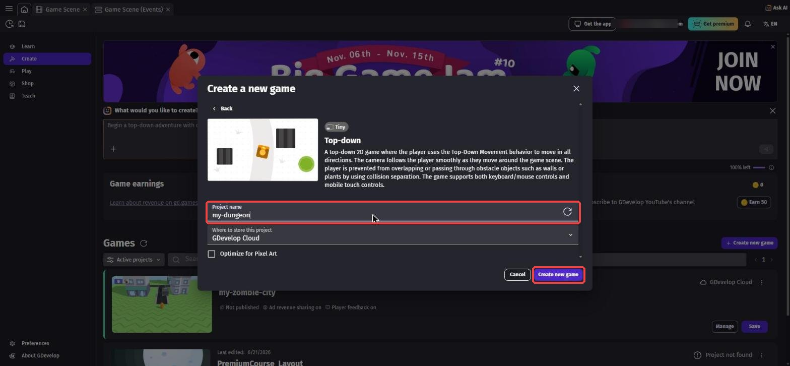
my-dungeon（赤枠）にして、「Create new game」（赤枠）を押すエディタが開くと、まん中にステージが見えます。
右の「Objects」の一覧に、Player（プレイヤー）、Ground_Tilemap（床）、Plant_Obstacle（草のかべ）、Wall_Obstacle（石のかべ）などがあります。
上の「Preview」を押すと、矢印キーでプレイヤーを歩かせられます。
少し遊んだら、ゲームのタブを閉じてエディタにもどろう。

カメラは動かさず、ひとつの部屋の中で戦います。
このあと出てくる 1280 や 720 という数は、画面の横はばと高さのことです。
1-3. プレイヤーを騎士にしよう
「Objects」の「＋」を押して、アセットストア（素材のお店）を開きます。
検索欄に dungeon と入れて、「Dungeon」（作者: Robert Norenberg (0x72)）のパックを開きます。
ライセンスは「CC0 (public domain)」なので、自由に使えます。
Character のなかに、騎士やゴブリンなどのキャラがたくさん入っています。
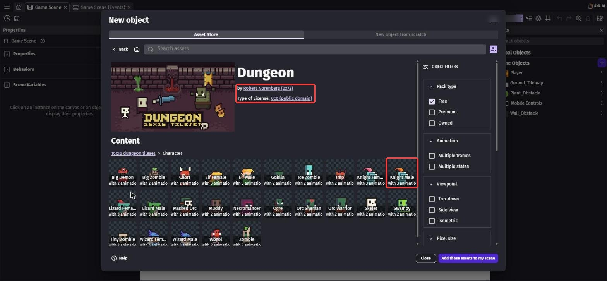
いったん「Close」で閉じます。
一覧の Player の「⋮」から「Swap assets」（素材を入れかえる）を選びます。
検索で knight male と入れて「Knight Male」を選び、「Swap」を押します。
名前は Player のまま、見た目だけ騎士になります。
アニメーションは「Idle」（立つ）「Run」（走る）「Hit」（ダメージ）の3つです。
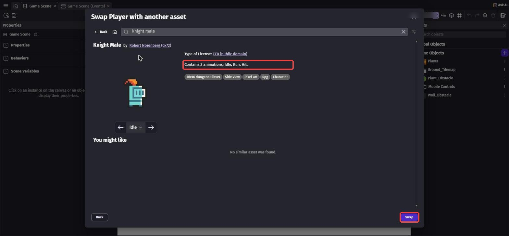
あとから「やっぱりこのキャラがいい」と思ったときも、これを使えば作り直さなくてすみます。
シーンの騎士をクリックすると、左に Player のプロパティが出ます。
「Behaviors」のところに、「SmoothCamera」と「TopDownMovement」の2つがあります。
- SmoothCamera … カメラがプレイヤーを追いかけるビヘイビア。
このゲームはカメラを動かさないので、右の「ー」を押して外します。 - TopDownMovement … 歩くためのビヘイビア。
この中の「Rotate object」をOFFにします。
ONのままだと、歩く方向に合わせて騎士がくるくる回ってしまいます。
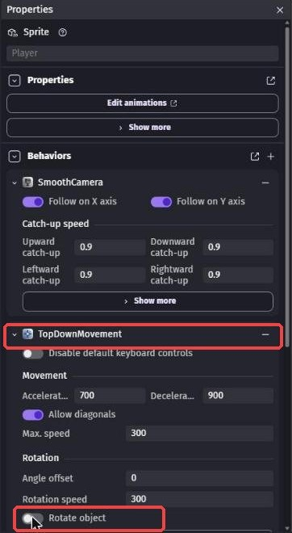
TopDownMovement の「Rotate object」はOFF（赤枠）
1-4. WASD キーで動かそう
上のタブの「Game Scene (Events)」を開きます。
スターターのイベント（プレイヤーをかべから押しもどすイベント）は、消さずにそのまま残しておきます。
右下の「+ Add...」→「Event group」で、新しいグループ Player を作ります。
グループをクリックしてから Shift + D を押すと、グループの中にイベントができます。
ここでは WASD キーでも動くように、「W を押したら、上キーを押したことにする」というイベントを作ります。
条件は key pressed で検索 →「Key pressed」。
「Key to check」に w を入れて「Ok」。
「Key just pressed」とちがい、「Key pressed」はキーを押しているあいだずっと続きます。
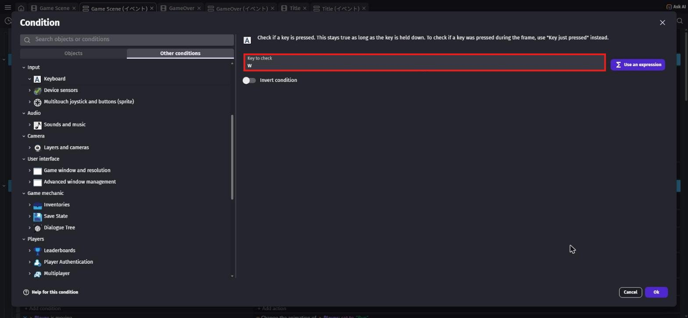
w（赤枠）アクションは、左の一覧で Player を選び、「Simulate up key press」を選びます。
Behavior は TopDownMovement のままで「Ok」。
「Simulate」は「押したことにする」という意味です。
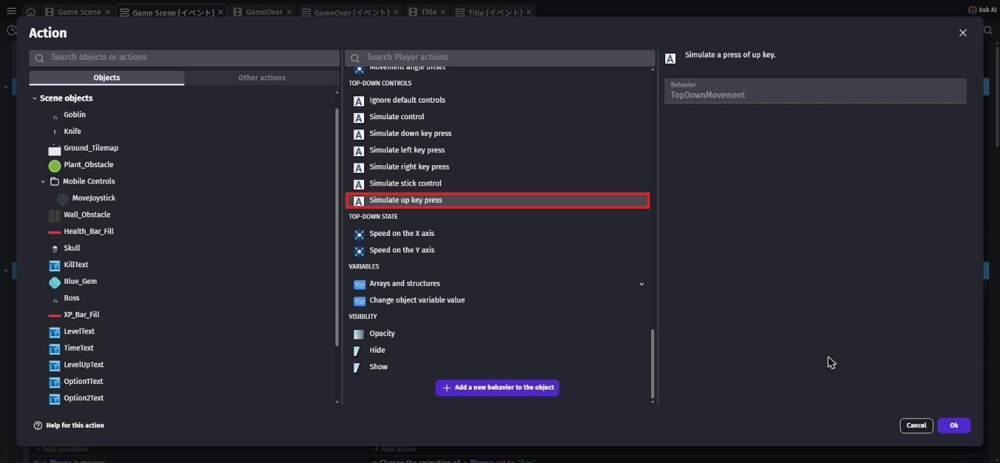
写真は完成したときのものなので、左の一覧にはこれから作るオブジェクトもならんでいます
同じようにして、あと3つイベントを作ります。
| 条件（Key pressed） | アクション |
|---|---|
s | Simulate down key press |
a | Simulate left key press |
d | Simulate right key press |
a のイベントに、アクションをもう1つ足します。
flip で検索 →「Flip the object horizontally」、Player、Activate flipping は「Yes」。
d のイベントにも同じアクションを足して、こちらは「No」にします。
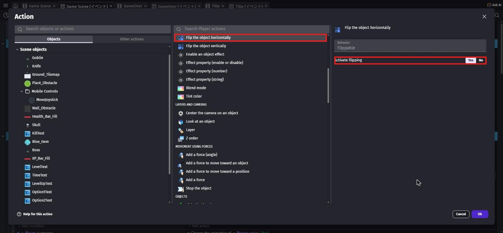
矢印キーで歩いたときも向きが変わるように、イベントをあと2つ作ります。
矢印キーは最初から動くので、こちらは反転だけでOKです。
| 条件（Key pressed） | アクション（Flip the object horizontally） |
|---|---|
Left（← キー） | Player を Yes |
Right（→ キー） | Player を No |
騎士の絵はもともと右を向いているので、「Yes」で左向き、「No」でもとの右向きになります。
1-5. 走るアニメーションと、画面のはし
新しいイベントの条件に、is moving で検索 →「Is moving」（Top-down movement のもの）、Object は Player。
アクションは animation by name で検索 →「Animation (by name)」で Player を「Run」。
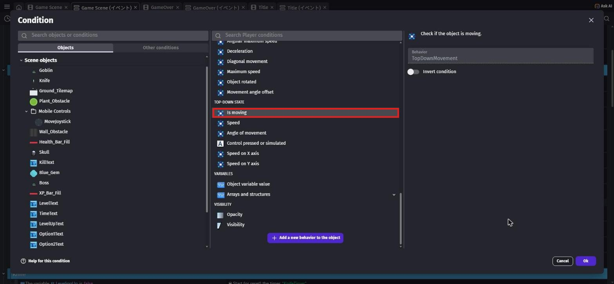
次に、このイベントを右クリックして「Add」→「Else」を選びます。
すぐ下に「Else」というイベントができます。
そのアクションに「Animation (by name)」で Player を「Idle」。
「動いているなら Run、そうでなければ Idle」という意味になります。
条件のないイベントを作ります（条件は空のままでOK）。
アクションは、左の一覧で Player を選び、「Position」を選びます。
Modification's sign は2つとも「= (set to)」にして、X position と Y position に下の式を入れます。
clamp(Player.X(), 0, 1280 - Player.Width())clamp(Player.Y(), 0, 720 - Player.Height())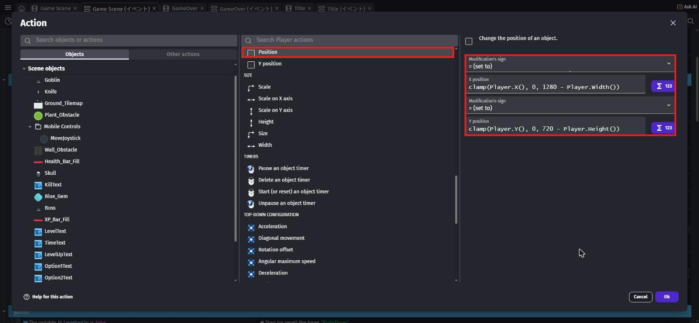
clamp(数, 下, 上) は、数が「下」より小さければ「下」に、「上」より大きければ「上」にします。
Player.X() は騎士の左はしのX座標なので、右のはしは「1280 − 騎士の横はば」までにしています。
たても同じで、「720 − 騎士の高さ」までです。
条件がないので、いつもこの計算をして、騎士を画面の中にもどしてくれます。
Player グループに、次のイベントがならんでいれば OK です。
- w・s・a・d を押している（a と d は反転もする）
- Left・Right を押している（反転だけ）
- Is moving → Run ／ Else → Idle
- 条件なし → 位置を clamp でおさめる
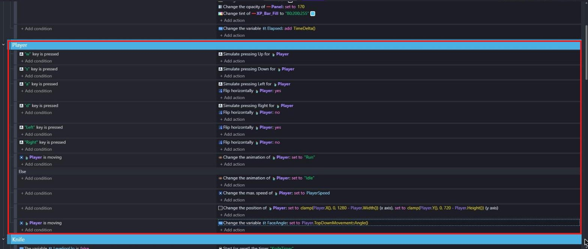
写真は完成したときのものです。
「Change the max. speed of」の行は第4章で、いちばん下の「FaceAngle」の行は第2章で足します
Ctrl + S⌘ + S で保存してから Preview します。
WASD キーでも矢印キーでも、騎士が動きます。
歩くと走るアニメーションになり、止まると立つアニメーションにもどります。
左へ歩くと左を、右へ歩くと右を向きます。
画面のはしまで歩いても、外に出ずに止まれば成功！

写真は完成したときのものなので、左上の体力バーや上の時間などは、まだ出ていなくて大丈夫です
💪 やってみよう
騎士の歩く速さを変えてみよう。
Dungeon パックのほかのキャラ（エルフや魔法使いなど）に「Swap assets」をするのもおもしろいよ。
ヒント
速さは、シーンの騎士をクリックして、TopDownMovement の「Max. speed」の数字を変えます。
第4章で、この速さはイベントで決めるようになります。
キャラを入れかえるときは、Idle と Run のアニメーションがあるものを選ぼう。
1-6. 🚨 つまずきポイント集
騎士がくるくる回る
原因: TopDownMovement の「Rotate object」がONのまま。
直し方: シーンの騎士をクリックして、Rotate object をOFFにしよう。
WASD で動かない（矢印キーでは動く）
原因: 「Key just pressed」を選んでしまった、またはアクションの Object が Player になっていない。
直し方: 条件が「Key pressed」になっているか、アクションが Player の「Simulate up key press」になっているか確かめよう。
左右の向きが逆になる
原因: 「Yes」と「No」が反対になっている。
直し方: 左（a・Left）のときに Yes、右（d・Right）のときに No になっているか確かめよう。
画面のはしで止まらない・はしから動けなくなる
原因: clamp の式の X と Y が逆、または 1280 と 720 が入れかわっている。
直し方: X position に 1280 - Player.Width()、Y position に 720 - Player.Height() の式が入っているか確かめよう。
止まっても走るアニメーションのまま
原因: 「Else」が、「Is moving」のイベントのすぐ下にない。
直し方: 「Else」は、すぐ上のイベントの条件の反対のときに動きます。
「Is moving」のすぐ下にドラッグして動かそう。
1-7. ✅ チェックリスト
全部チェックできたら第1章クリア！
🎉 次回は、騎士が自動でナイフを投げるようにするよ。